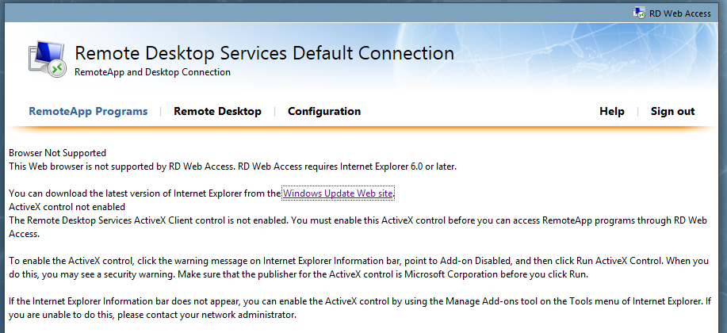

Browser Not Supported, IE10, IE11 – Remote Desktop Services 2008 R2 | JulianBen.com
Microsoft Remote Desktop Services / RDS website Errors from a Windows 8 machine or a pc with Internet Explorer 10 or 11. You get the below Error

Browser Not Supported - This Web browser is not supported by RD Web Access. RD Web Access requires Internet Explorer 6.0 or later. You can download the latest version of Internet Explorer from the Windows Update Web site
This is caused by Microsoft not releasing an update to 2008 to allow it to be accessed in the later browsers. In order to get it to work we can implement a workaround that forces machines with newer browsers to access the site as IE9 compatability view.
First of all this fix ONLY works on RDS Gateway servers with 2008 R2 SP1 installed. If you try it on a server without SP1 it will get rid of the error but you wont see any remote apps.
1) Login to the RDS Gateway server
2) Open Up IIS Management Console.
3) Branch out the sites and then left click on RDweb. On the right hand side double click on HTTP Response Headers.
rdserror2 (image not restored from the original import)
4) On the right hand pane now right click and select Add…
rdserror3 (image not restored from the original import)
5) On the box that appears enter :-
Name : X-UA-Compatible
Value : IE=9
rdserror4 (image not restored from the original import)
Now do a IISRESET on the server and you should be good to go..
If you have any pending windows updates also install these as sometimes it wont work until they are installed.